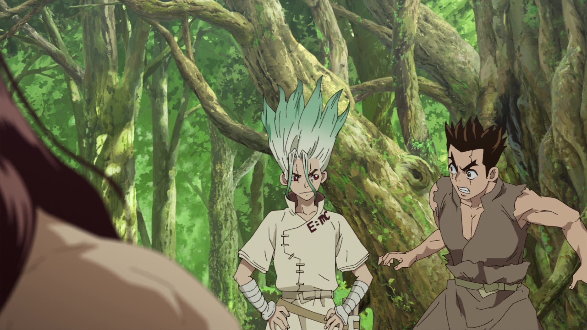
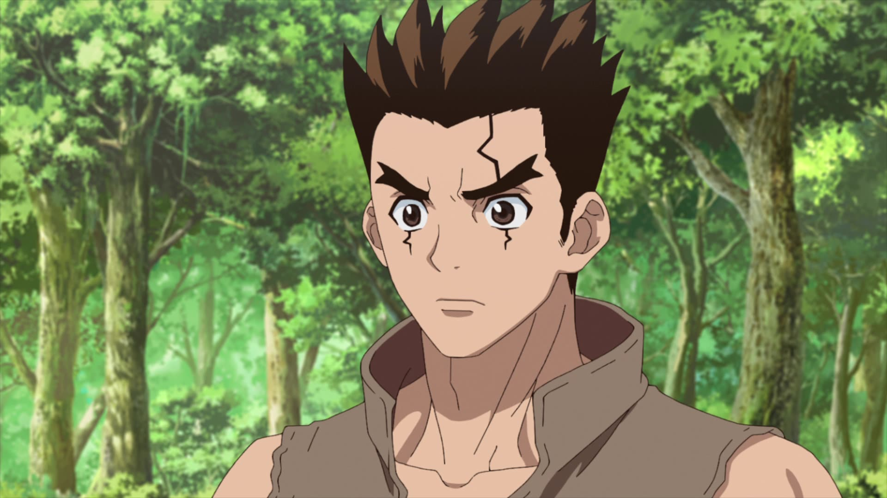
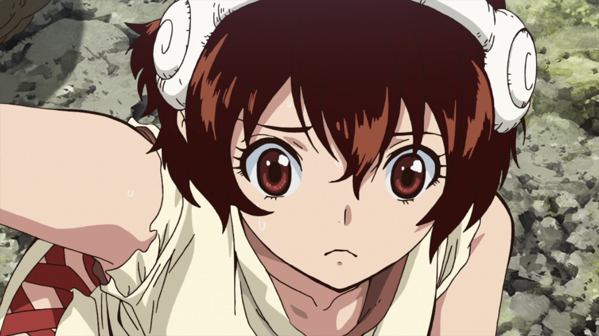
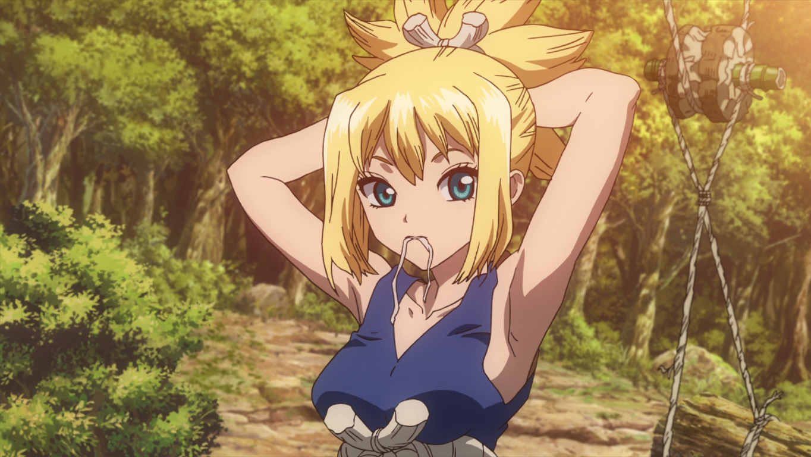
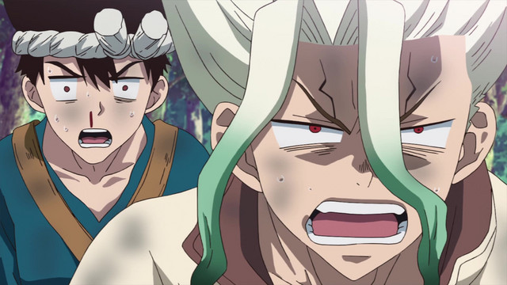
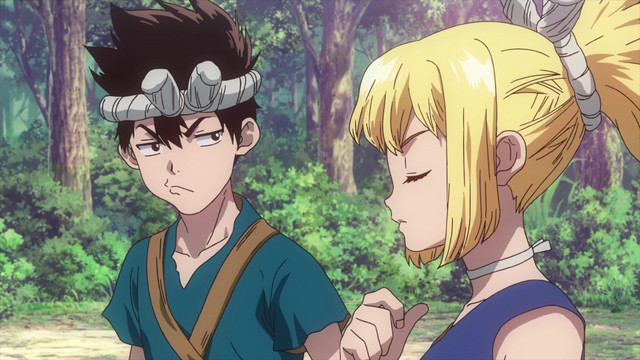
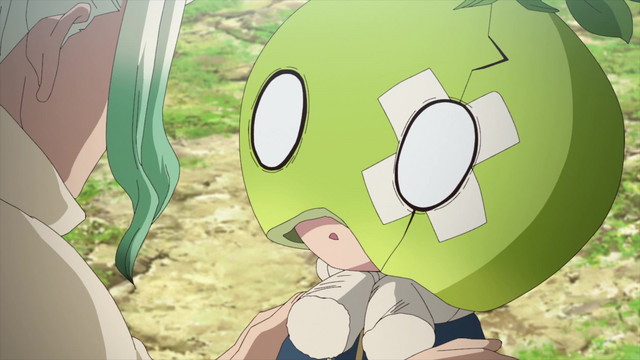
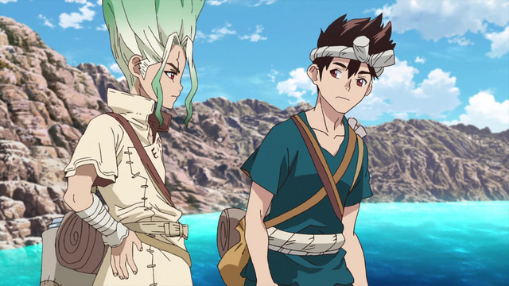
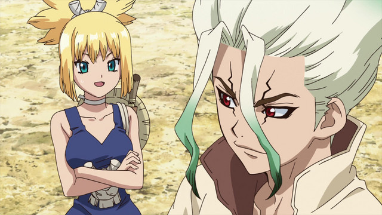
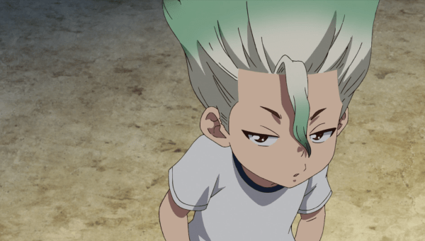

DR.STONE

Plusieurs milliers d'années après un mystérieux phénomène qui a transformé toute l'humanité en pierre, Senku, un lycéen extrêmement intelligent et animé par un esprit scientifique, se réveille. Face à ce monde figé, où toutes les civilisations se sont effondrées, il décide d'utiliser la science pour le reconstruire. Avec l'aide de son ami d'enfance, l'infatigable Taiju Ôki qui s'est lui aussi réveillé, ils vont devoir repartir de zéro. Ainsi commence une incroyable aventure pour se réapprprier des milliers d'années d'histoire de la science, de l'Âge de pierre à leurs jours...
Informations
Titre original : ドクターストーン / Dr.Stone
Studio(s) : TMS Entertainment
Genres: Action – Aventure – Drame – Fantastique – Science-fiction – Shônen
Durée : 24 mins
-
Episode 1 : Stone World
-

Episode 2 : King of the Stone World
-

Episode 3 : Les Armes de la Science
-

Episode 4 : Allumons un signal de fumée
-

Episode 5 : Stone World The Beginning
-
Episode 6 : Les Deux nations du monde de pierre
-

Episode 7 : 2 millions d'années en lieu sûr
-

Episode 8 : Stone Road
-
Episode 9 : Nous brandirons la lumière de la science
-

Episode 10 : Une alliance frivole
-

Episode 11 : Clear World
-

Episode 12 : J'assurerai tes arrières, et toi, les miens
-

Episode 13 : Le Guerrier masqué
-
Episode 14 : Master of Flame
-

Episode 15 : 2 millions d'années cristallisées
-

Episode 16 : Histoire du temps jadis